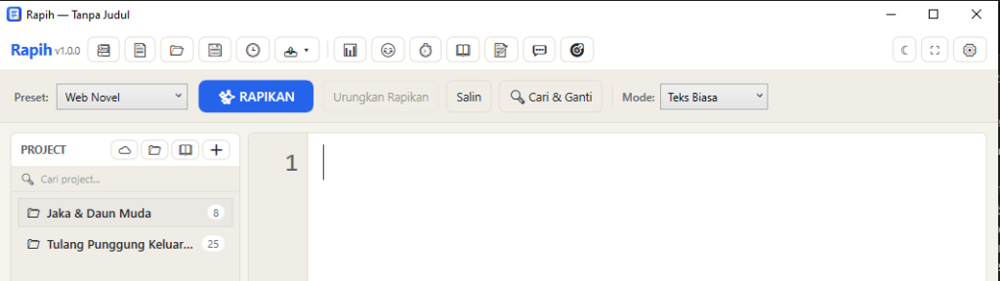

Bebas dari kerumitan tata letak dokumen umum. Fokus pada plot, penokohan, dan dialog tanpa rasa cemas kehilangan ide naskah. Berjalan 100% offline di laptop Windows Anda.

Naskah tersimpan aman di disk laptop Anda. Tidak butuh koneksi internet.
Rapikan tanda petik, dialog tag, dan alinea sastra secara otomatis.
Kelola puluhan bab novel dalam satu proyek naskah yang terstruktur.
Hasilkan buku digital EPUB ber-cover, berkas Word DOCX, atau salin Wattpad.
Ketik atau gunakan teks contoh di bawah untuk melihat bagaimana Rapih menata tanda petik, spasi elipsis, dan alinea narasi secara rapi.
Dirancang dengan memahami keresahan nyata para penulis: tidak ingin pusing memikirkan margin, font, dan tabulasi, namun naskah tetap tersusun indah sesuai kaidah bahasa.
Secara cerdas mengoreksi tanda petik lurus menjadi petik lengkung ("..."), memformat dialog tag sesuai PUEBI/EYD, dan memisahkan adegan dengan tanda pembatas yang seragam.
Tidak perlu lagi menyimpan berkas naskah seperti bab_1_final_revisi2.docx. Seluruh bab novel tersimpan rapi dalam satu berkas proyek yang dapat diatur ulang urutannya.
Tentukan target jumlah kata harian Anda. Pantau statistik penulisan real-time, waktu membaca pembaca per bab, serta perkembangan total panjang novel.
Ekspor seluruh bab ke berkas EPUB lengkap dengan cover buku digital, naskah Word (.docx) berstandar penerbit mayor, atau format ringkas untuk Wattpad dan KaryaKarsa.
Jangan pernah takut ide naskah terhapus saat menulis tengah malam. Rapih mencatat riwayat perubahan dan snapshot otomatis secara berkala di latar belakang.
Pilihan tema Sepia, Gelap (Dark Mode), dan Terang dengan ukuran font yang dapat disesuaikan. Menjaga mata tetap nyaman berjam-jam saat menuangkan imajinasi.
Perbedaan mendasar antara pengolah kata umum kantor dengan ruang kerja khusus novelis.
| Kebutuhan Menulis | ✨ Rapih (Desktop) | Microsoft Word / Docs |
|---|---|---|
| Format Dialog & Alinea Otomatis | ✅ 1-Klik otomatis sesuai EYD sastra | ❌ Harus manual spasi & tabulasi |
| Struktur Naskah Bab & Cerita | ✅ Panel sidebar bab terorganisir rapi | ❌ Tercecer ke banyak berkas .docx |
| Ekspor EPUB Ber-Cover | ✅ Langsung jadi buku digital siap baca | ❌ Butuh aplikasi konverter tambahan |
| Privasi & Bekerja Offline | ✅ 100% Offline, naskah di disk Anda | ⚠️ Bergantung cloud/login sinkron |
| Kenyamanan Visual Menulis | ✅ Mode Sepia & Gelap bebas distraksi | ❌ Dipenuhi toolbar tabel, margin, grafik |
Kami sedang merampungkan platform Rapih Cloud yang menghubungkan aplikasi desktop Windows Anda dengan:
Daftarkan email Anda untuk menerima undangan beta tester dan kupon penyimpanan cloud gratis saat resmi diluncurkan.
Kami menjamin 100% privasi Anda. Tanpa spam, berhenti berlangganan kapan saja.
Unduh paket aplikasi desktop Rapih untuk Windows 64-bit. Ekstrak atau pasang langsung di komputer Anda tanpa konfigurasi rumit.
Versi Stabil • Standalone Portable / Executable
Tersimpan aman di Google Drive resmi Rapih.
Buka tautan Google Drive resmi dan klik tombol Unduh untuk menyimpan berkas aplikasi ke komputer Anda.
Klik dua kali pada Rapih.App.exe. Aplikasi langsung terbuka tanpa instalasi panjang.
Pilih Proyek Baru, beri judul naskah Anda, dan mulailah merangkai kata dengan tenang.
Hal-hal penting yang sering ditanyakan oleh sesama rekan penulis.